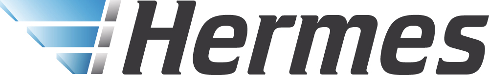
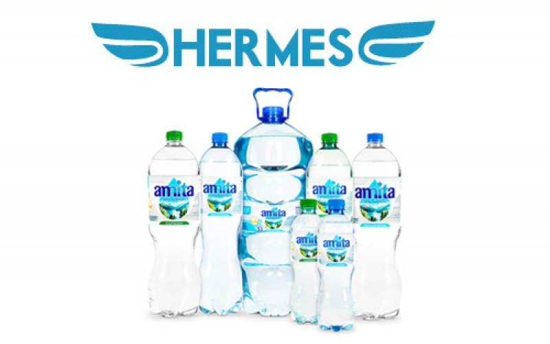
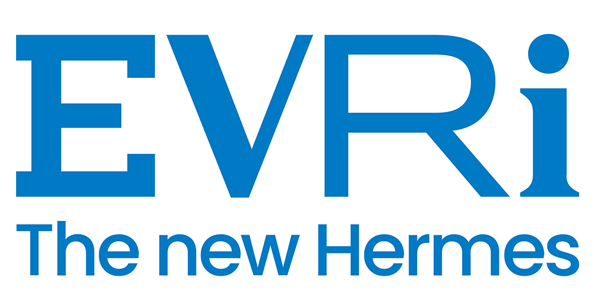

에르메스 Hermès
에르메스는 속도보다 장인성과 기다림의 가치를 브랜드 경험으로 만든다. 제품은 희소성과 품질을 통해 욕망을 만들지만, 더 깊은 차별성은 쉽게 대체되지 않는 제작 태도와 시간의 감각에 있다.
최종 업데이트
에르메스는 어떤 브랜드인가
에르메스는 속도보다 장인성과 기다림의 가치를 브랜드 경험으로 만든다. 제품은 희소성과 품질을 통해 욕망을 만들지만, 더 깊은 차별성은 쉽게 대체되지 않는 제작 태도와 시간의 감각에 있다.
에르메스는 어떻게 봐야 할까
에르메스는 속도보다 장인성과 기다림의 가치를 브랜드 경험으로 만든다. 제품은 희소성과 품질을 통해 욕망을 만들지만, 더 깊은 차별성은 쉽게 대체되지 않는 제작 태도와 시간의 감각에 있다.
에르메스는 어떻게 시작되고 성장했나
에르메스는 프랑스 럭셔리 패션 브랜드로 1837년 티에리 에르메스(Thierry Hermes)가 설립했다. 말에 필요한 용품을 취급하는 마구상으로 시작한 에르메스는 오늘날 최상의 품질을 인정받는 세계적인 명품 브랜드로 자리매김했다.
에르메스의 브랜드 아이덴티티는 무엇인가
마케팅 부서가 없다고 알려진 에르메스는 마케팅 대신 그들의 장인 정신을 브랜드 전면에 내세우고 있다. 에르메스의 브랜딩 활동 역시 장인들의 공방을 중심으로 운영되고 있으며, 에르메스는 예술에 대한 애정을 보여주는 다양한 프로그램과 전시를 기획하고 있다.
에르메스의 대표 제품과 서비스는 무엇인가
에르메스의 제품들은 희소성이 높아 명품 중의 명품으로 여겨진다. 최초로 가방에 지퍼를 단 볼리드 백부터 유명 명사의 이름을 차용한 켈리 백, 버킨 백은 에르메스의 시그니처 아이템으로 자리 잡았다.
또한, 에르메스의 실크 스카프는 뛰어난 디자인으로 단순한 패션 아이템을 넘어 예술 작품으로 여겨지고 있다.
에르메스는 지금 어떤 상태인가
에르메스 연혁 — 주요 사건은 언제였나
에르메스 로고는 어떻게 변해왔나

BI/CI 아카이브 2보관 이미지 2
BI/CI 아카이브 3보관 이미지 3
BI/CI 아카이브 4보관 이미지 4자주 묻는 질문
에르메스의 브랜드 아이덴티티는 무엇인가요?
마케팅 부서가 없다고 알려진 에르메스는 마케팅 대신 그들의 장인 정신을 브랜드 전면에 내세우고 있다.
에르메스의 대표 제품은 무엇인가요?
에르메스의 제품들은 희소성이 높아 명품 중의 명품으로 여겨진다.
에르메스는 어느 기업이 소유하고 있나요?
국가: 프랑스; 본사: 파리; 소유자: H51; 산업: 패션
출처와 검증
브랜드명은 한글과 원어를 함께 표기하되 데이터에 없는 표기는 만들지 않습니다. 기원 국가·설립연도는 검수된 정의문에서 확인된 값을 우선하고, 없을 때만 공식 웹사이트 URL이 일치하는 위키데이터 개체의 값을 씁니다.